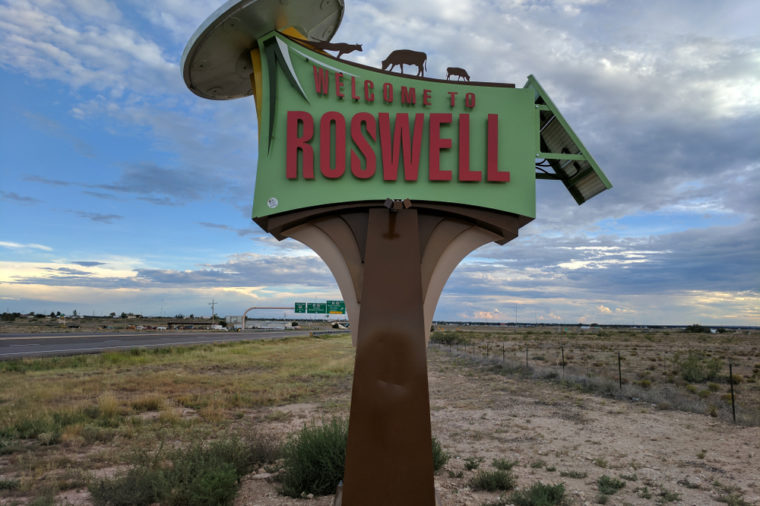
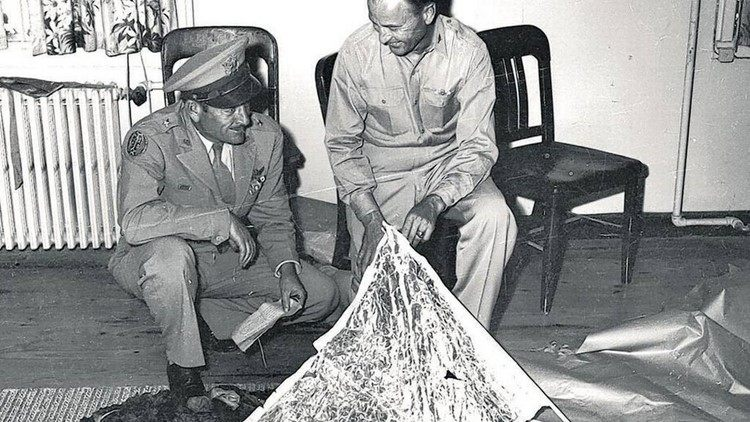
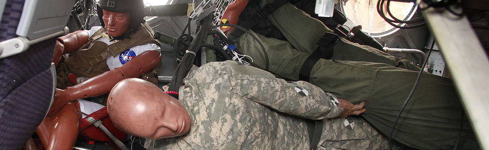

In the summer of 1947, a rancher discovered unidentifiable debris in his sheep pasture outside Roswell, New Mexico. Although officials from the local Air Force base asserted that it was a crashed weather balloon, many people believed it was the remains of an extraterrestrial flying saucer; a series of secret “dummy drops” in New Mexico during the 1950s heightened their suspicions. Nearly 50 years after the story of the mysterious debris broke, the U.S. military issued a report linking the incident to a top-secret atomic espionage project called Project Mogul. Still, many people continue to embrace the UFO theory, and hundreds of curiosity seekers visit Roswell and the crash site every year.
One morning around Independence Day 1947, about 75 miles from the town of Roswell, New Mexico, a rancher named Mac Brazel found something unusual in his sheep pasture: a mess of metallic sticks held together with tape; chunks of plastic and foil reflectors; and scraps of a heavy, glossy, paper-like material. Unable to identify the strange objects, Brazel called Roswell’s sheriff. The sheriff, in turn, called officials at the nearby Roswell Army Air Force base. Soldiers fanned out across Brazel’s field, gathering the mysterious debris and whisking it away in armored trucks.
Did you know...
On July 8, "RAAF Captures Flying Saucer on Ranch in Roswell Region" was the top story in the Roswell Daily Record. But was it true? On July 9, an Air Force official clarified the paper’s report: The alleged "flying saucer," he said, was only a crashed weather balloon. However, to anyone who had seen the debris (or the newspaper photographs of it), it was clear that whatever this thing was, it was no weather balloon. Some people believed–and still believe–that the crashed vehicle had not come from Earth at all. They argued that the debris in Brazel’s field must have come from an alien spaceship.
These skeptics grew more numerous during the 1950s, when the Air Force conducted a series of secret "dummy drops" over air bases, test ranges and unoccupied fields across New Mexico. These experiments, meant to test ways for pilots to survive falls from high altitudes, sent bandaged, featureless dummies with latex "skin" and aluminum "bones"–dummies that looked an awful lot like space aliens were supposed to–falling from the sky onto the ground, whereupon military vehicles would descend on the landing site to retrieve the "bodies" as quickly as possible. To people who believed the government was covering up the truth about the Roswell landing, these dummy drops seemed just as suspicious. They were convinced that the dummies were actually extraterrestrial creatures who were being kidnapped and experimented on by government scientists.
It turned out that the Army knew more about Brazel’s "flying saucer" than it let on. Since World War II, a group of geophysicists and oceanographers from Columbia University, New York University and the Woods Hole Oceanographic Institution on Cape Cod had been working on a top-secret atomic espionage project at New Mexico’s Alamogordo Air Field that they called Project Mogul. Project Mogul used sturdy high-altitude balloons to carry low-frequency sound sensors into the tropopause, a faraway part of the Earth’s atmosphere that acts as a sound channel. In this part of the atmosphere, sound waves can travel for thousands of miles without interference, much like under the ocean. The scientists believed that if they sent microphones into this sound channel, they would be able to eavesdrop on nuclear tests as far away as the Soviet Union.
According to the U.S. military, the debris in Brazel’s field outside Roswell actually belonged to Project Mogul.
It was the remains of a 700-foot-long string of neoprene balloons, radar reflectors (for tracking) and sonic equipment that the scientists had launched from the Alamogordo base in June and that had, evidently, crashed in early July 1947. Because the project was highly classified, no one at the Roswell Army Air Field even knew that it existed, and they had no idea what to make of the objects Brazel had found. (In fact, some officials on the base were worried that the wreckage had come from a Russian spy plane or satellite–information that they were understandably reluctant to share with the public.) The "weather balloon" story, flimsy though it was, was the simplest and most plausible explanation they could come up with on short notice. Meanwhile, to protect the scientists’ secret project, no one at Alamogordo could step in and clear up the confusion.
Today, many people continue to believe that the government and the military are covering up the truth about alien landings at and around Roswell. In 1994, the Pentagon declassified most of its files on Project Mogul and the dummy drops, and the federal General Accounting Office produced a report ("Report of Air Force Research Regarding the Roswell Incident") designed to debunk these rumors. Nevertheless, there are still people who subscribe to the UFO theory, and hundreds of thousands of curiosity seekers visit Roswell and the crash site every year, hoping to find out the truth for themselves.